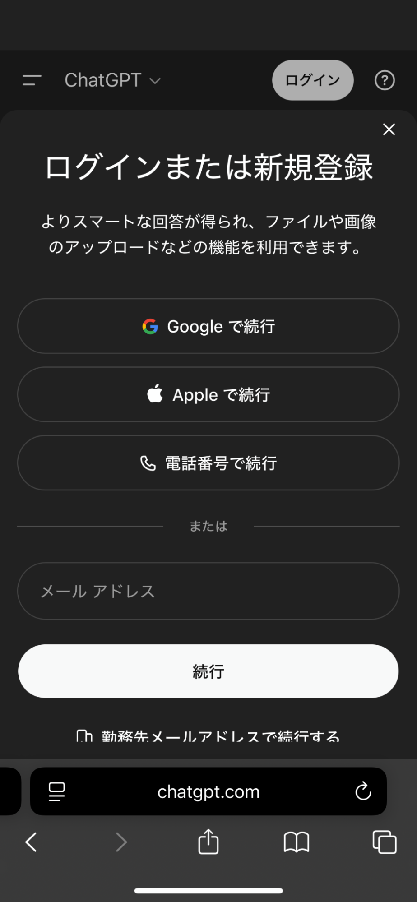
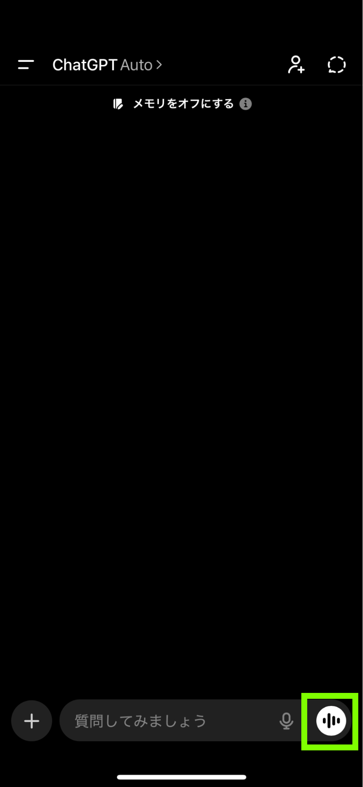
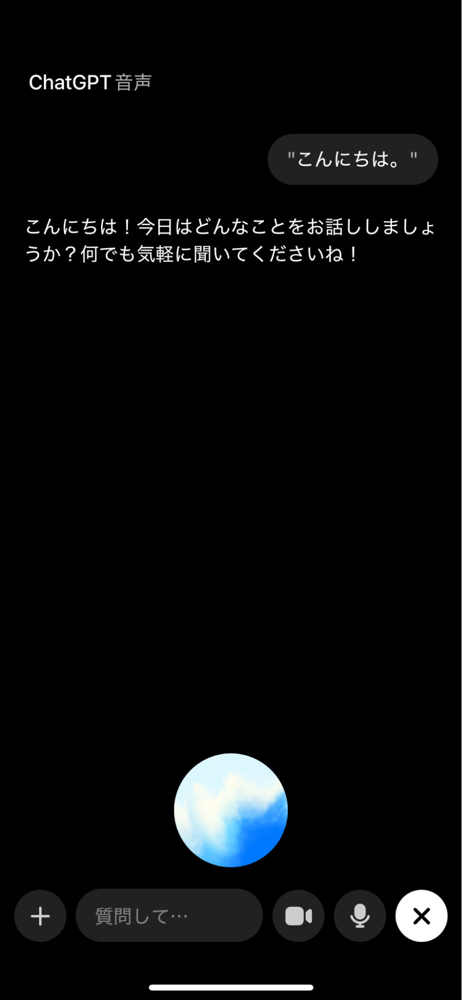
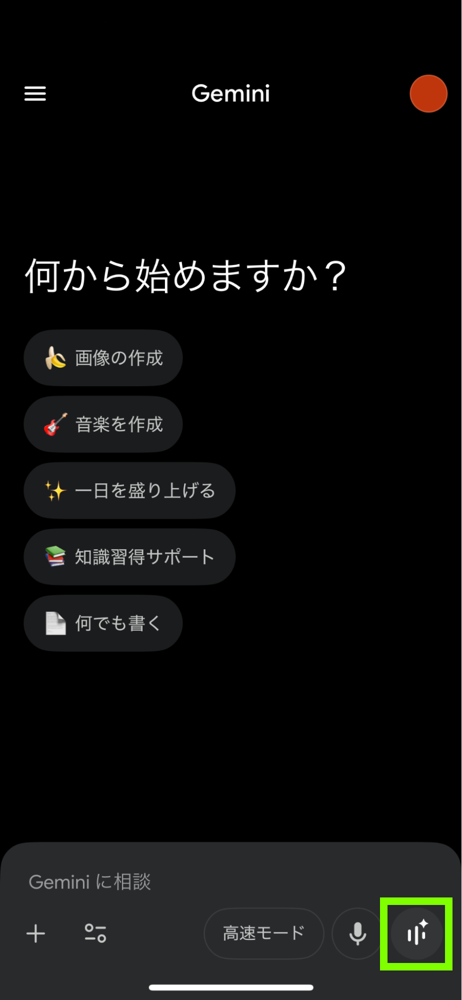
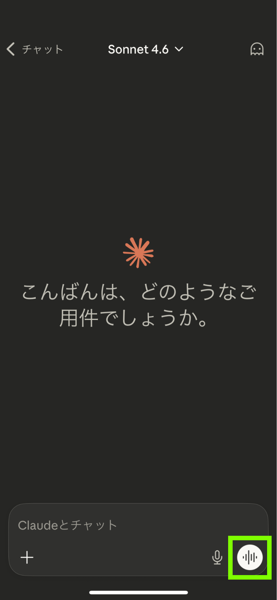
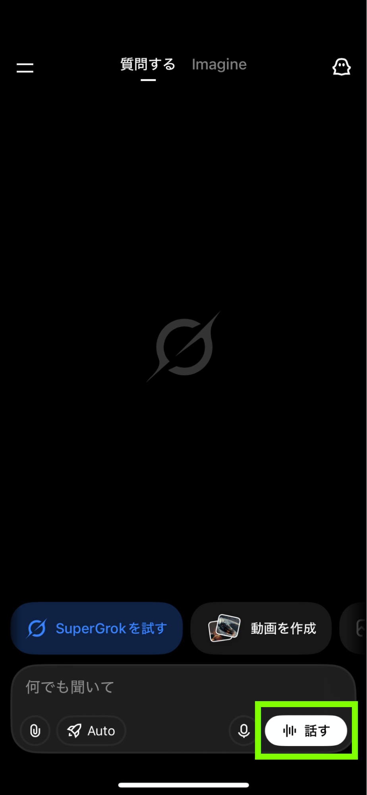

Guide 01
事前準備
生成AIのアカウント作成・生成AIのアプリインストール
まず準備するもの
本書の学習を始めるために必要なのは、次の3つです。
①スマートフォンまたはパソコン
②生成AIのアカウント
③音声入力ができる学習環境
生成AIのアカウントをすでにお持ちの方は、このGuide 01をご覧いただく必要はありません。Guide 02へお進みください。まだ、アカウントをお持ちでない方や、使った経験がない方は、以下の手順で事前準備を進めてください。
①スマートフォンまたはパソコン
②生成AIのアカウント
③音声入力ができる学習環境
生成AIのアカウントをすでにお持ちの方は、このGuide 01をご覧いただく必要はありません。Guide 02へお進みください。まだ、アカウントをお持ちでない方や、使った経験がない方は、以下の手順で事前準備を進めてください。
ChatGPTを使う場合（標準的な使い方）
本書では、ChatGPTの利用を標準として想定しています。ChatGPTを使用する場合は、以下の手順で学習を始めるまでの準備を行ってください。
1）アカウントの作成
https://chatgpt.com
にアクセスし、ページ上部のボタンからアカウントを作成してください。

メールアドレスや電話番号、各種サービスのアカウントを使ってChatGPTのアカウント作成が行えます。
メールアドレスや電話番号、各種サービスのアカウントを使ってChatGPTのアカウント作成が行えます。

2）アプリのダウンロード
3）音声モードに切り替えてみる
本書では、声でAIと会話を行う音声モードを利用します。ChatGPTを開き、右下にある音声ボタンをタップしてみましょう。
会話モードの起動の仕方が分かれば、準備は万端です。Guide 02へ進みましょう。


会話モードの起動の仕方が分かれば、準備は万端です。Guide 02へ進みましょう。
ChatGPT以外の生成AIを利用する場合（Gemini, Claude, Grokなど）
事情によりChatGPTを使えない場合でも、本書は利用できます。その場合は、Gemini、Claude、Grokなどの音声モードが搭載された、他の生成AIを使用してください。それぞれの手順は以下の通りです。
1）アカウントの作成
各サービスの公式サイトでアカウント作成を行なってください。
・Gemini：https://gemini.google.com/app?hl=ja
・Claude：https://claude.ai/login
・Grok：https://grok.com/
・Gemini：https://gemini.google.com/app?hl=ja
・Claude：https://claude.ai/login
・Grok：https://grok.com/
2）アプリのダウンロード
3）音声モードに切り替えてみる
・Gemini：
音声モードは、画面の一番右下のボタンから行うことができます。
・Claude：音声モードは、画面の一番右下のボタンから行うことができます。2026年3月時点では、対応言語は英語のみです。
・Grok：音声モードは、画面の一番右下のボタンから行うことができます。
どの生成AIを使っても、プロンプトの内容は同じなので、練習そのものに違いはありません。ただし、本書執筆時点では、ChatGPTに精度が劣るものがあります。
音声モードは、画面の一番右下のボタンから行うことができます。

・Claude：音声モードは、画面の一番右下のボタンから行うことができます。2026年3月時点では、対応言語は英語のみです。

・Grok：音声モードは、画面の一番右下のボタンから行うことができます。

どの生成AIを使っても、プロンプトの内容は同じなので、練習そのものに違いはありません。ただし、本書執筆時点では、ChatGPTに精度が劣るものがあります。